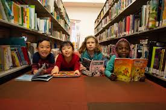

ScreenFreeSummers
ScreenFreeSummers
Richmond Libraries: Free Summer Activities & Reading Events
Published July 2025
Richmond upon Thames libraries are buzzing this summer with fun family events—from coding workshops and Lego challenges to author storytelling sessions. Most events are free and often no booking is needed.
Coding Workshops with Under the GUI Academy
Richmond Public Library has teamed up with Under the GUI Academy to deliver **free coding workshops** for ages 9–13. Held from May through August, kids learn Python via PixelPAD, and take part in a mini “hackathon” challenge at the end of summer.([turn0search13])
Lego Club with Story Garden Theme
Linked to the 2025 **Summer Reading Challenge (Story Garden)**, libraries across the borough host **Lego-building sessions** where children can design creative builds and participate in weekly themed challenges. Open to all, usually on Fridays in August at Richmond, Twickenham, and Teddington branches.([turn0search6])
Storytelling & Author Events
During the **Richmond Reads** season, local authors (like Caroline Hardie) lead fun reading and storytelling workshops. Expect tales, creative prompts, and train-themed stories for ages 5–11—with booking advised.([turn0search8])
Regular Drop‑in Sessions
Weekly sessions include:
- Family Storytime and Toddler Time (songs, rhymes, short stories)
- Informal DUPLO or Lego play for little builders
- Chess, board games & reading groups for older children and families
Most don't require pre-booking—just show up and join in.([turn0search0])
Summer Reading Challenge: Story Garden
This year’s **2025 Story Garden Reading Challenge** invites kids aged 4–11 to read six library books, collect stickers, and earn a certificate and medal. Activities include book reviews, themed events, and Lego challenges at branches.([turn0search6])
Find Events at Your Library
Want to see what’s happening near you? Most UK library services offer searchable event listings—by postcode or branch name. This makes it easy to find local craft sessions, storytime, book clubs, Lego workshops, and reading challenges.
Try these trusted sources:
- Libraries Connected Universal Offers Calendar – national campaign and event listings
- Richmond Library Youth Events Page – official local events including Lego club, coding and storytime
These sessions are free, family-friendly, and perfect for summer discovery and creative play—check your local library and get involved!